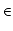
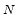
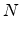
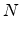

Let
S = (Si)i  
[2 * [1 + [2 + [1]]]] = 2, 6, 36, 360, 5400, 113400 ...
The input file contains several test cases. For each of them, the program input is a single line containing the codification, without any space, followed by an integer N
For each test case, the program output is a single line containing the list of first N
 ,
,
[2 + [1]] = 2, 3, 4, 5, 6 ... [1 + [2 + [1]]] = 1, 3, 6, 10, 15, 21, 28, 36 ... [2 * [5 + [- 2]]] = 10, 30, 30, -30, 90, -450, 3150 ...
Given a codification, the problem is to write the first N
Input
 N
N 50)
50)
Output
Sample Input
[2+[1]] 3
[2*[5+[-2]]] 7
Sample Output
2 3 4
10 30 30 -30 90 -450 3150